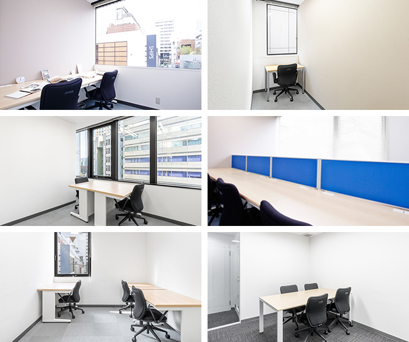

【個室レンタルオフィス】
オープンオフィス渋谷神南
オープンオフィス渋谷神南がNEW OPEN
渋谷から徒歩7分。
日々進化する東京カルチャーを肌で感じながら仕事をするクリエイティブな業種の方には最高のロケーション。
オープンオフィス渋谷神南が提供するオフィスサービス
-
 高速インターネット＜光ファイバー＞
高速インターネット＜光ファイバー＞
- 100Mbpsの光ファイバーによるブロードバンド環境をご用意しました。各部屋に配線済みですので、パソコンに繋げばすぐLAN経由で高速インターネットを利用出来ます。
-
 ネットワーク・カラーレーザープリンタ+スキャナー
ネットワーク・カラーレーザープリンタ+スキャナー
- ネットワークを利用して、各お部屋のパソコンから印刷できます。プリンタをご用意いただく必要もございません。
スキャナー機能も搭載しております。
-
 カラーレーザーコピー
カラーレーザーコピー
- フロア内にご用意してあります。カード方式でコピーが出来ますので、小銭の準備が不要です。
-
 ICカードキーによる入室管理
ICカードキーによる入室管理
- 専用ICカードを使ったホテル式のスマートシステムを用いて、セキュリティーを向上させています。
-
 ミーティングルーム（会議室）
ミーティングルーム（会議室）
- 商談・会議にご利用いただける共有スペースをご用意しています。インターネットで簡単に予約をしていただけます。
-
 無線LAN（WiFi）
無線LAN（WiFi）
- 共有スペースとミーティングスペースにて、無線LAN(WiFi)サービスをご利用いただけます。

オープンオフィス渋谷神南の特徴

渋谷駅ハチ公口より徒歩７分の絶好のロケーション
日々進化する東京カルチャーを肌で感じながら仕事をするクリエーティブな業種に最適
店舗のバックオフィスとしての活用も可能
貴社のワークスタイルに柔軟に対応できる24時間利用可能体制
近隣に公園やレストランなども充実
オフィス周辺のMap
オープンオフィス渋谷神南近隣のスポット
- ■銀行
- 三菱東京ＵＦＪ銀行 渋谷支店
三井住友銀行 渋谷支店
みずほ銀行 渋谷支店
シティバンク 渋谷支店
ゆうちょ銀行 渋谷神南店 - ■レストラン
- デコ （フレンチ）
ラ・ボエム クアリタ（イタリアン）
T.G.I. Friday’s 渋谷神南店（アメリカン）
割烹 山城屋庄蔵
但馬屋（しゃぶしゃぶ・すき焼き）
ワイヤードカフェ渋谷Q FRONT店 - ■ホテル
- 渋谷エクセルホテル東急
セルリアンタワー東急ホテル
渋谷東武ホテル
渋谷グランベルホテル
東急ステイ 渋谷 - ■レジャー
- セルリアンタワー フィットネスクラブ
ティップクロス東京 渋谷
- ■映画館
- TOHOシネマズ アミュプラザおおいた
- ■映画館
- 東急百貨店本店
東急ハンズ
NHKスタジオパーク
たばこと塩の博物館
オープンオフィス渋谷神南の住所・アクセス
- 住所:
- 東京都渋谷区神南1-12-14 渋谷宮田ビル 6F,7F,8F
- 空港からのアクセス:
- 羽田空港から京浜急行にて品川駅まで15分。品川駅から JR山手線にて渋谷駅まで15分。
成田空港から京成スカイライナーにて日暮里まで40分、日暮里駅から JR山手線にて渋谷駅まで30分。
両空港からリムジンバスでも渋谷エリアにアクセスできます。 - 電車からのアクセス:
- JR「渋谷神南駅」から徒歩9分
JR「渋谷神南駅」から車で約5分 - お車でのアクセス:
- 明治通り、井の頭通りから神南郵便局前交差点へ 交差点とシダックスホールの中間地点
オープンオフィス渋谷神南のフロアマップ
6F

7F

8F

※フロア内は禁煙です。
※こちらはイメージ図となりますので、状況が異なる場合は現況を優先させていただきます。
- ◆初回納入金
- 利用料1ヶ月分の保証金
- ◆共益費
- 水道光熱費、ビル共益費、ゴミ出し、フロア・トイレの清掃、共有部分の消耗品代を含みます。
リージャスグループの説明
リージャス・グループは、柔軟なワークスペースを提供する世界最大の企業です。そのネットワークは世界120カ国1,100都市、3300拠点に及びます。会員数は250万人で、業界で成功を収める大小様々な企業や起業家の方々にご利用いただいています。
リージャスは、個室タイプのレンタルオフィス、コワーキングスペースなど多彩なオフィスプラン、近年需要が高まるモバイルワークやバーチャルオフィス、障害復旧サービスの提供を通じ、お客様が予算やワークスタイルに合わせて仕事を行うことができる環境を提供いたします。